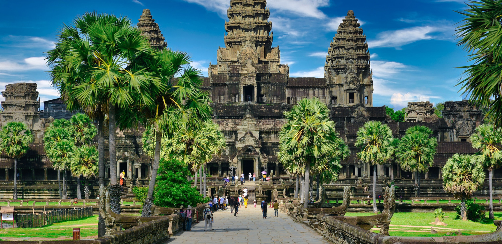
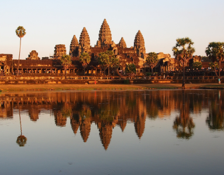
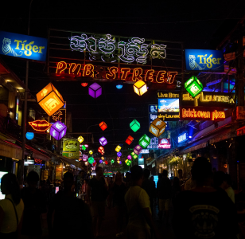
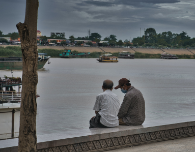
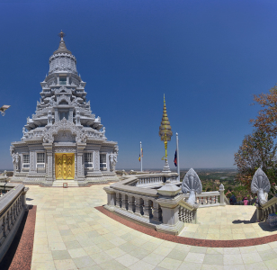

Travelspot
観光名所
カンボジアの観光名所
カンボジアには歴史的な場所や多くの店があるダウンタウンなどたくさんの観光地がある！
日本になく珍しいものばかり！
<人気の観光名所>
アンコールワット
クメール建築最高傑作！！
南北約1300ｍ 東西約1500ｍと規模がとても大きく、一周するのに3時間は必要かも…
でも行くべき！

パブストリート
人が絶えないカンボジア最大の繁華街！
人気のレストランや雑貨店がずらりと並び、昼は穏やかだが、夜になると「光の道」といわれるほどのライトアップが圧巻！
トンレサップ湖
東南アジア最大の湖。
ボートに乗って、日本にはない水上生活村を見に行こう！
珍しい生き物にも会えるかも。

ウドンの仏教遺跡群
かつての王都ウドンに建つ遺跡。
ながーい階段を登った先の仏塔からカンボジアを一望できる！”絶景”
また、古い３つの仏塔から歴史を感じられ、夢中になるかも・・